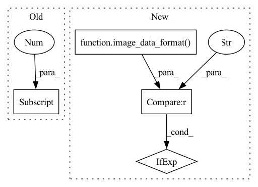

Pattern ID :30716

Before Change
def conv_encoder(inputs, mlp_ratio=4, kernel_size=7, layer_scale=1e-6, drop_rate=0, activation="gelu", name=""):
input_channel = inputs.shape[-1]
nn = depthwise_conv2d_no_bias(inputs, kernel_size, use_bias=True, padding="SAME", name=name)
nn = norm_inverted_bottleneck(nn, mlp_ratio, layer_scale, drop_rate, activation=activation, name=name)
// print(f"{nn.shape = }, {inputs.shape = }")
return keras.layers.Add(name=name + "output")([inputs, nn])
After Change
def conv_encoder(inputs, mlp_ratio=4, kernel_size=7, layer_scale=1e-6, drop_rate=0, activation="gelu", name=""):
nn = depthwise_conv2d_no_bias(inputs, kernel_size, use_bias=True, padding="SAME", name=name)
nn = nn if image_data_format() == "channels_last" else layers.Permute([2, 3, 1])(nn) // channels_first -> channels_last
nn = norm_inverted_bottleneck(nn, mlp_ratio, layer_scale, drop_rate, activation=activation, name=name)
nn = nn if image_data_format() == "channels_last" else layers.Permute([3, 1, 2])(nn) // channels_last -> channels_first
// print(f"{nn.shape = }, {inputs.shape = }")
In pattern: SUPERPATTERN
Frequency: 3
Non-data size: 4
Instances
Fragment ID: 90536151
Project Name: leondgarse/keras_cv_attention_models
Commit Name: 7fe31da02f008f26eff018ec2199631227c94efc
Time: 2023-02-10
Author: leondgarse@gmail.com
File Name: keras_cv_attention_models/edgenext/edgenext.py
M Class Name: AnonimousClass
N Class Name: AnonimousClass
M Method Name: conv_encoder(7)
N Method Name: conv_encoder(7)
M Parent Class:
N Parent Class:
M File Name: keras_cv_attention_models/edgenext/edgenext.py
N File Name: keras_cv_attention_models/edgenext/edgenext.py
M Start Line: 135
M End Line: 139
N Start Line: 147
N End Line: 152
'>
Before Change
):
if attn_block_params.get("attn_type", None) == "halo": // HaloAttention
halo_block_size = attn_block_params.get("attn_params", {}).get("block_size", DEFAULT_PARAMS["halo"]["block_size"])
if inputs.shape[1] % halo_block_size != 0 or inputs.shape[2] % halo_block_size != 0:
gap_h = halo_block_size - inputs.shape[1] % halo_block_size
gap_w = halo_block_size - inputs.shape[2] % halo_block_size
pad_head_h, pad_tail_h = gap_h // 2, gap_h - gap_h // 2
After Change
):
if attn_block_params.get("attn_type", None) == "halo": // HaloAttention
halo_block_size = attn_block_params.get("attn_params", {}).get("block_size", DEFAULT_PARAMS["halo"]["block_size"])
height, width = inputs.shape[1:-1] if image_data_format() == "channels_last" else inputs.shape[2:]
if height % halo_block_size != 0 or width % halo_block_size != 0:
gap_h = halo_block_size - height % halo_block_size
gap_w = halo_block_size - width % halo_block_size
'>
Fragment ID: 90536150
Project Name: leondgarse/keras_cv_attention_models
Commit Name: 2ba27b0132168f3590dd4b3bead9edc15a70ba7d
Time: 2023-02-11
Author: leondgarse@gmail.com
File Name: keras_cv_attention_models/aotnet/aotnet.py
M Class Name: AnonimousClass
N Class Name: AnonimousClass
M Method Name: aot_block(17)
N Method Name: aot_block(17)
M Parent Class:
N Parent Class:
M File Name: keras_cv_attention_models/aotnet/aotnet.py
N File Name: keras_cv_attention_models/aotnet/aotnet.py
M Start Line: 156
M End Line: 158
N Start Line: 156
N End Line: 159
'>
Before Change
if use_block_pos_emb:
block_pos_emb = BiasPositionalEmbedding(axis=[1, 2, 3], attn_height=nn.shape[1], name=stage_name + "pos_emb")
block_pos_emb.build([None, num_head, nn.shape[1] * nn.shape[2], (nn.shape[1] // sr_ratio) * (nn.shape[2] // sr_ratio)])
else:
block_pos_emb = None
After Change
nn = layer_norm(nn, name=stage_name)
if use_block_pos_emb:
height, width = nn.shape[1:-1] if image_data_format() == "channels_last" else nn.shape[2:]
block_pos_emb = BiasPositionalEmbedding(axis=[1, 2, 3], attn_height=height, name=stage_name + "pos_emb")
block_pos_emb.build([None, num_head, height * width, (height // sr_ratio) * (width // sr_ratio)])
else:
'>
Fragment ID: 90536152
Project Name: leondgarse/keras_cv_attention_models
Commit Name: 2ba27b0132168f3590dd4b3bead9edc15a70ba7d
Time: 2023-02-11
Author: leondgarse@gmail.com
File Name: keras_cv_attention_models/cmt/cmt.py
M Class Name: AnonimousClass
N Class Name: AnonimousClass
M Method Name: CMT(22)
N Method Name: CMT(22)
M Parent Class:
N Parent Class:
M File Name: keras_cv_attention_models/cmt/cmt.py
N File Name: keras_cv_attention_models/cmt/cmt.py
M Start Line: 212
M End Line: 248
N Start Line: 197
N End Line: 235